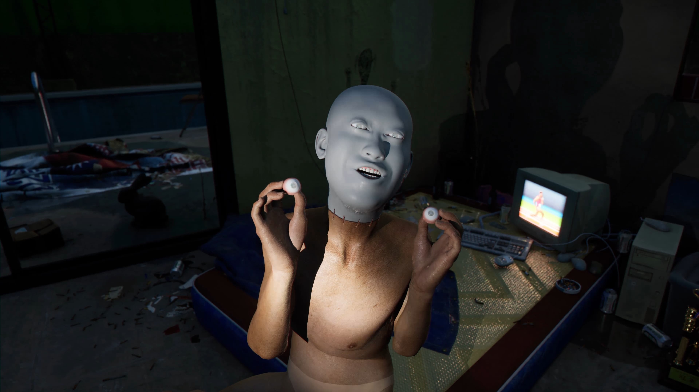
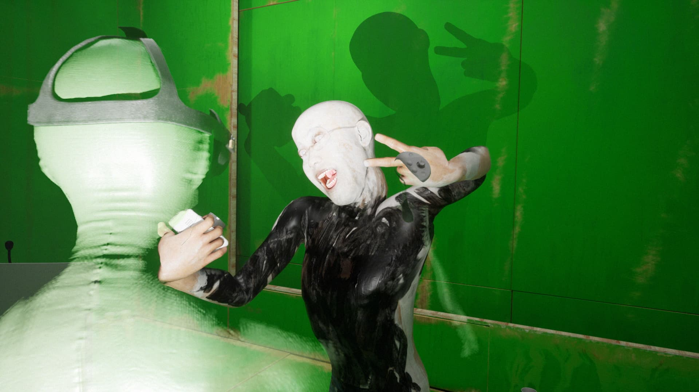
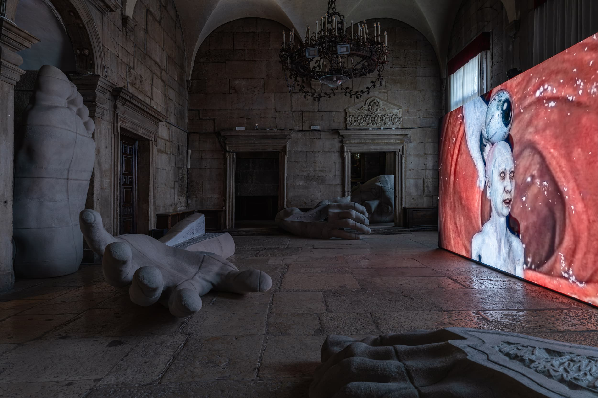
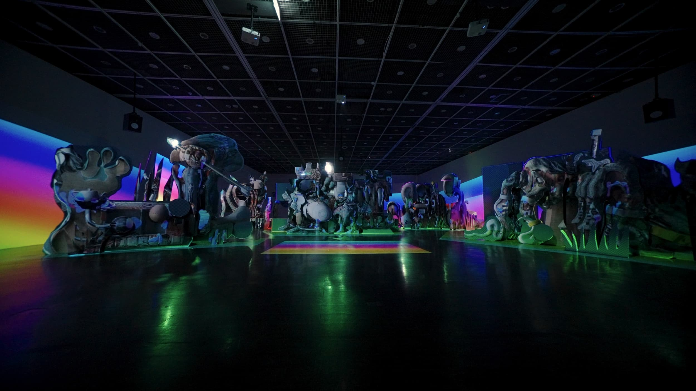
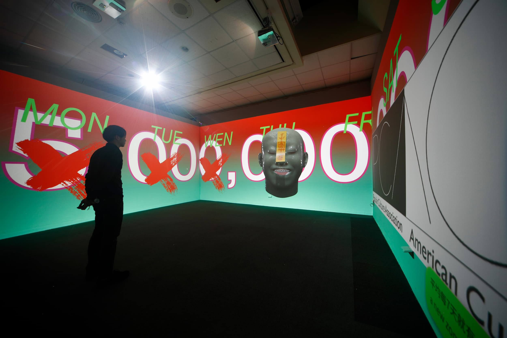
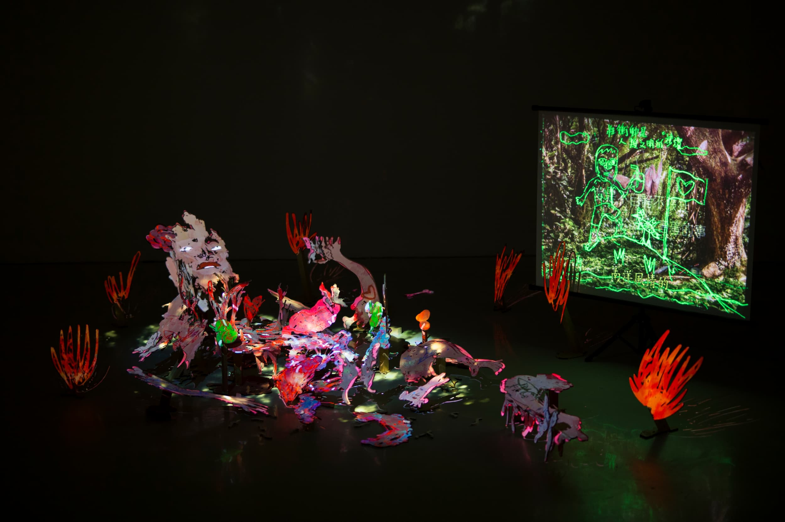
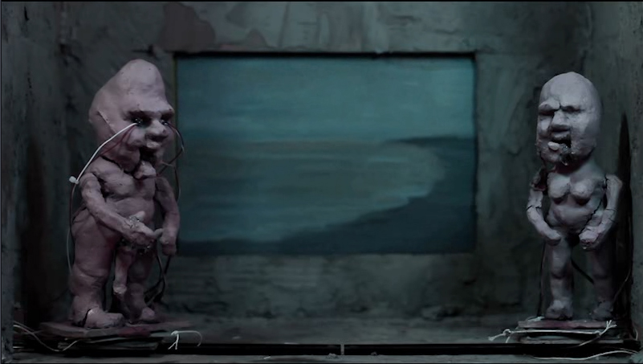

Li Yi-Fan 李亦凡
Currently in Rijksakademie, Amsterdam.
M.A., New Media Art, National Taiwan University of Art, 2016
B.A., Fine Art, National Normal University, 2010
2026 Screen Melancholy, Palazzo delle Prigioni, Venice, Italy
2025 Last Warning, Institut d'art contemporain de Villeurbanne, Lyon, France
2023 SAVE AS, VT ARTSALON, Taipei
2019 Shelter of CHAOS.zip, Digital Art Center, Taipei, Taiwan
2015 Rest in pieces, FreesArt space, Taipei, Taiwan
2025 14th Mercosul Biennial, Institute of Contemporary Art (IAC), Lyon, France
2025 iwillmedievalfutureyou2, Lilith Performance Studio, Sweden
2024 Dreamscreen, Leeum Museum of Art, Seoul
2024 ICC Annual 2024: Faraway, so close, NTTICC, Tokyo
2024 Hardcore drive, TOFU space, Copenhagen
2023 Small World — 2023 Taipei Biennial, Taipei Fine Arts Museum, Taiwan
2023 Fever Genesis, Culture Lab LIC–Gallery, New York
2021 Phantasmapolis Asian Art Biennial, National Taiwan Museum of Fine Art, Taiwan
2020 Digital Art Festival, LOVE01, Songshan Cultural and Creative Park, Taipei, Taiwan
2020 Taiwan Biennial: Sub Zoology, National Taiwan Museum of Fine Art, Taiwan
2017 Next Art Tainan, Asir Art Museum, Tainan, Taiwan
2017 Rhetoric of Shame, Kuandu Museum of Fine Arts, Taipei, Taiwan
2013 Data-Neurons, Songshan Cultural and Creative Park, Taipei, Taiwan
Golden Harvest Awards, 2024
Taishin Arts Award, 2022
Kaohsiung Award, 2020
Next Art Tainan, 2017
S-An Cultural Foundation Awards, 2017
Digital Art Awards Taipei, 2013
S-An Cultural Foundation Awards, 2013
After completing important_message.mp4, I realized the visceral power of rapid, real-time rendering technology. It made me reflect on how this sheer speed alters the mode of motion graphics production itself. Historical accounts often note how the invention of pre-packaged tin paint tubes indirectly birthed Impressionism and the practice of en plein air painting. This led me to ponder: will today's near-instantaneous rendering tools similarly reshape the creative methodology of artists, or even reconfigure the logic of imagery?
Animation was a slow, deliberate craft. Artists structured movement frame by frame, enduring endless long render times to glimpse the final result. In this repetitive cycle of rendering and refining, images were sculpted much like handicrafts. In such a paradigm, improvisation was impossible, because the cost of production was simply too high. Artists could never share a temporal present with their audience during the making and every single decision had to be meticulously calculated.
I began to wonder if I could build a self-made toolkit inside a game engine, allowing me to generate motion graphics in a highly improvisational, almost performative manner.
This toolkit ultimately evolved into a virtual reality-based puppetry system. Yet, within this setup, I am not a traditional puppeteer performing for an audience; instead, I am playing with a toy, performing for myself. This explains why, throughout the video, I am always facing the puppet rather than the viewer. It's like a safe house for me.
Embracing a DIY filmmaking attitude, I build almost everything by myself in series, operating as a one-person crew. From building the environment to props modeling. And of course the voice acting and actual performance, I took on everything. This process naturally birthed the persona within the series: a figure who constantly addresses the audience, appearing exceedingly intelligent yet paradoxically foolish; someone always eager to spout grand philosophies, yet profoundly fragile.
I have always viewed my image production (or rather, my image performance) as a form of writing. But this "writing" is never natural. It is an act made possible only through technology. It feels deeply intuitive, yet this intuition is inherently laced with technological biases. Our bodies, memories, fears, and desires are extended by technology, yet simultaneously compressed across dimensions. Through a language of dark whimsy and self-amusement, I attempt to inhabit the very crevices of this technological compression.


howdoyouturnthison originates from an interrogation of bodily control and fear. In developing this puppetry system, my initial hurdle was technical and conceptual: how to command a digital body via physical controllers. To address this, I examined the history of player-character mechanics in video games since the '90s, drawing connections to robotics, sci-fi cinema, and the body politics of modern digital avatars. It reflects on how Western sci-fi tropes have conditioned an Asian millennial's collective imagination of existence.
The character in the film inhabits a rooftop illegal apartment, furnished entirely with digital assets scraped from the internet — akin to a temporary refuge rigged up by a predatory landlord. In tandem, the character's body itself is a patchwork of mismatched digital parts. This raises a critical question for the digital age: do virtual bodies offer us newfound fluidity, or do they construct boundaries even more calcified than those in the real world?

As digital software shifts from a perpetual license to a subscription-based model, how does this redefine the very nature of artistic expression? In What Is Your Favorite Primitive, I seek to interrogate the inherent politics of software tools, capturing the systemic struggle within the social and ethical dilemmas spawned by this shifting institutional paradigm. How does the medium of the moving image alter our modes of communication? In what ways do emojis convey emotional nuances that transcend individual cognitive perception?
The work chronicles human life (and death) through intimate details, while boldly speculating that video-mediated technologies might structure a radical new biopolitics by projecting a certain collectivity that is yet to come.

Screen Melancholy is my third game engine practice. It explores the complex, layered relationship between individuals and "images" in the visual-first generation. This relationship encompasses how people receive and create images. Through the character in the video, I encourage viewers to "learn how to make animation!" As a cautionary warning, it suggests that understanding how images are produced is essential to grasp the power mechanism behind them. Ironically, these profound truths about images are expressed through the very medium of images. While the philosophical-sounding statements are delivered with such sincerity, the character comes across as rather mischievous. The obscure knowledge in the work resembles that of Wikipedia or content farms, leaving viewers unsure where to place their gaze. This feels like a private game between me and the audience. Through the screen, I make them laugh while also evoking fear or anger. These emotions force the screen to decompress and, in the viewer's mind, transform into a world of its own. They are invited into this world but are also intermittently excluded, constantly reminded of a truth: images are like magic. Behind this magic, however, lies something far more complex than sorcery.

LARP (Live Action Role-Playing) is, by essence, a game of embodiment and freedom. But when access to digital tools is conditional, what remains of our ability to play, to create our own narratives? Are we still actors, or merely subscribers trapped in a loop of consumption?
If You Can't LARP, You'll Cry examines the transformations of digital production within a subscription economy that turns technology not into a tool we own, but into a service we submit to. Through a hypnotic digital ballet, clay sculptures come to life, orchestrated by a hybrid figure — both puppeteer and captive — with a virtual reality headset firmly strapped to their head.
In this digital ritual, the names of cyberattacks resonate like modern prayers. If You Can't LARP, You'll Cry prophesizes: if our identities vanish as soon as the subscription expires, the ultimate revelation might just be... at the edge of time.

There are many legends in human culture that are closely associated with visual taboos, such as one might be fossilized upon seeing the prohibited object or lose one's life due to gradual weakening after seeing one's own reflection in water. The action of seeing is itself both a temptation and a curse. Computer graphics offers humanity a fresh way of viewing, but at the same time, imposes a new curse as well. In Boring Gray, he collages numerous video game images, stock photographs and model databases into an enormous corpse that is similar to a dying monster in video games who has been whispering all sorts of visual curses.

In The Matrix, Neo shouts, "This is not real!" in anger as he learns about the truth of the Matrix. Morpheus smiles and asks, "What is real?" What is real? Twenty years after the movie was presented to the world, the question has become even more intriguing today. Technology allows humans to take in information in almost superhuman quantities. We are fearful of information that is unable to be determined as true or false while we project our desires onto virtual, digital flesh. A piece of information may not be true, but what about the fear and desire it triggers? Is there such a thing as false fear? What about unreal desire? important_message.mp4 starts with a series of internet conspiracy theories and explores human life in the face of internet and technological advancements.

This work uses a projector to sculpturally depict spoken language, blending painting and sculpture. Through mapping projection onto sculptural forms, it aims to create a more organic relationship between the image and the viewer. Unlike traditional images that reduce the viewer's bodily power, this work allows the viewer, within such a relationship, to move freely through the space and actively choose viewing angles. It depicts the frantic ramblings of a dying person in delirium. Through joyful singing of military songs, it explores themes of love, patriotism, and other emotional expressions. If it is to be given any meaning, it lies in the spontaneous imaginings that unexpectedly emerge during the artist's ongoing struggle with the media — fantasies about the work itself, fragmented and impossible to take full form.

This work uses a nonlinear narrative to depict various episodes surrounding a car accident. In the corner against the wall, large piles of scattered cardboard boxes are stacked. A projector shines on these boxes in an illogical way, with each box painted with a tiny theatrical scene. Projections of insects crawling connect each bizarre, animated scene, leading viewers into a narrative structure that seems almost endless.
The fragmented nature of this work encourages viewers to choose their own viewing duration, positions, and interpretations of the story. Typically, image creation requires planning, achievable only through rational pre-production, filming, editing, and image computing. However, Li Yi-Fan questions this rationality and completeness through "scatteredness," making the work more like a document that references art itself in this incomplete state rather than a finished work — capturing such a document-like state of living.

This work stems from a film project the artist abandoned. He had created extensive sets, puppets, and scripts for a puppet animation, but was unable to begin filming for various reasons. The project was eventually left unfinished. Later, the leftover sets and props reminded the artist of the period when the project was created, full of ideas that had only been conceptualized but never actualized. As a result, he uses a projector to invoke these discarded objects, recreating scenes that mirror his life: fragmented, trivial, and unable to take form.

In this servo-controlled puppet animation, the protagonist encounters three questions and three answers during a beach walk. Crafted with motors to animate puppets and shot as a low-tech pornographic short, the work portrays the protagonist constantly contemplating different desires and the choices they present. It also captures the melancholy of passing time amid a flood of carnal fantasies. Displaying the work on a tiny television screen intensifies the sense of intimacy of the viewing experience.